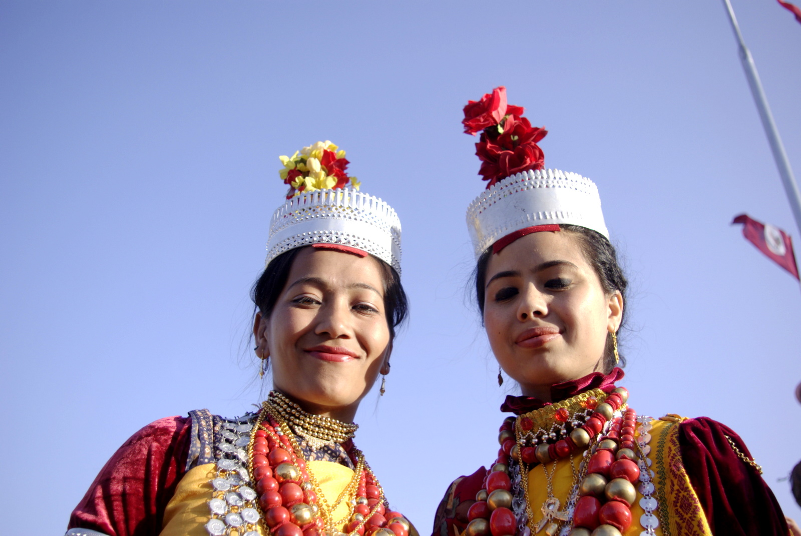
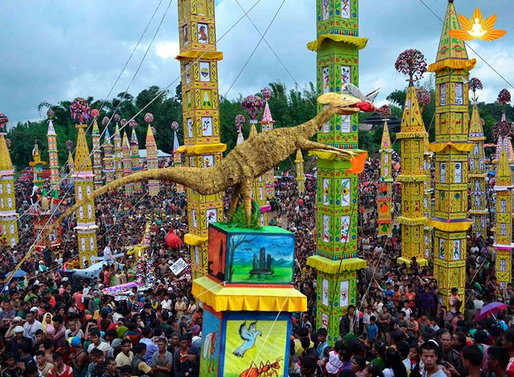
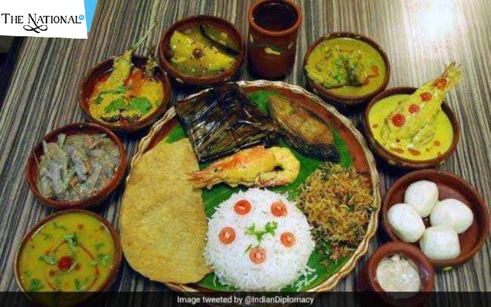

Endowed with incredible natural beauty, Meghalaya is one of the most beautiful states in Northeast India.
Meghalaya means ‘The Adobe of Clouds’ It is a place where it rains the most among all Indian states. The state is also known as the
‘Scotland of East’. The wettest place in India is Meghalaya record highest rainfall.
Meghalaya comes into existence on 21 January 1972.

Meghalaya is famous for its mountains, peaks, falls and caves. The highest peak in the state is Shillong Peak. The beautiful destinations
Cherapunji in North Khasi Hills, Tura, Nohkalikai Falls, Shillong, Elephant Falls, and Krang Suri Falls are all at the heart of Meghalaya. They
attract people from outside to come and visit the places and enjoy the natural beauties of the state.

Meghalaya is famous for festivals like Wangala and Shad Naongkrem. It is also known for the dance forms like
Shad suk and Mynsiem. The cone-shaped bamboo umbrellas known as Knup are popular in Meghalaya. There is a tradition for the girls
to wear Dakmanda which is an unstitched short cloth. It is made of handwoven cotton fabric. The people are known for their weaving skills. They
make handmade stools, baskets, chairs and mats. Mostly, bamboo is used for their handcrafts.

The food culture of Meghalaya is very much famous to the people around the country. It attracts many people to come and taste their dishes made of special
ingredients. The most popular dishes of Meghalaya are Nakham Bitchi, Dohkhlieh, Pumaloi,
Bamboo Shoots etc.
The languages spoken in the state mostly are Khasi, Garo and Jaintia. These three are the main tribes of Meghalaya.
Other than that, Bengali, Assamese and English are also used. Moreover, English is the official language of the state.